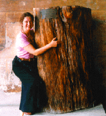

June Julian

June Julian, an exhibiting visual artist, and experienced art educator, received her
doctorate in art education from New York
University in May, 1997. Her ecology art research project,
"A World Community of Old Trees"
was one of the first doctoral studies in the discipline to use the medium of the World Wide Web
to collect and transmit data.
The source for her aesthetic inquiry project on the Web is her personal art making.
For the past eight years, she has been using both traditional and digital paint media to
represent the oldest trees that she can find near her home and in her travels.
She initiated the tree project both as research and as a collaborative art piece,
and then invited the world to join in.
Dr. Julian has presented her approaches to using Internet technologies in the art classroom at
numerous professional conferences including SIGGRAPH 98, The National Art Education Association,
The School of the Visual Arts, and Teachers College. She has published her research in Art Education,in the Marilyn Zurmuehlen Working Papers in Art Education,
and on the AppleWeb site. Also, she has written extensively on the arts and was the Colorado
Regional Editor of The New Art Examiner. Her background in environmental education
includes studies in the program of Environmental Conservation Education at New York
University and during a Fulbright Grant in the Netherlands.
As an early member of Navigating Global Cultures, a collaborative project of the Commission on Arts and Humanities at New York University, she developed her Web project and participated in early CUSeeMe experiments. Based on her continuing studio work and classroom teaching, her art education research interest is aesthetic inquiry in Internet technologies.
 Return to Main Page
Return to Main Page
June Julian jj68@nyu.edu